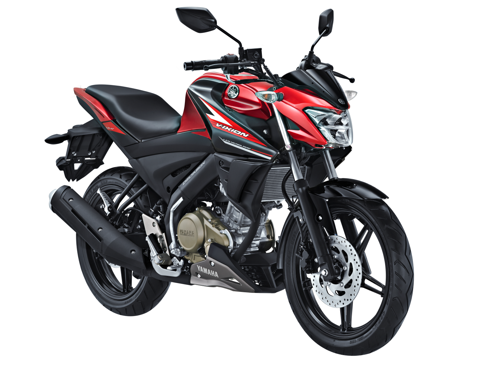
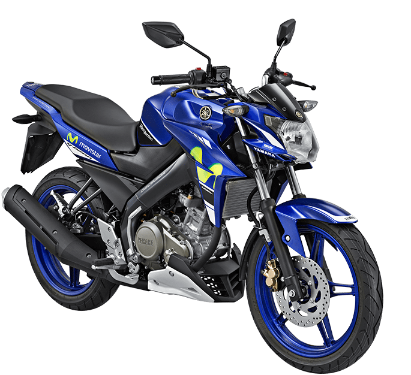

Yamaha Vixion
Spesifikasi Yamaha Vixion Yamaha Vixion tersedia dalam pilihan mesin Petrol di Indonesia Sport baru dari Yamaha hadir dalam 2 varian. Bicara soal spesifikasi mesin Yamaha Vixion, ini ditenagai dua pilihan mesin Petrol berkapasitas 149.8 cc. Vixion tersedia dengan transmisi Manual tergantung variannya. Vixion adalah Sport 2 seater dengan panjang 1955 mm, lebar 720 mm, wheelbase 1295 mm. serta ground clearance 165 mm.

Spesifikasi
Mesin
- Tipe mesin : 4 langkah, SOHC, berpendingin cairan
- Jumlah/posisi silinder: Silinder tunggal/tegak
- Isi silinder : 149,7 cc
- Diameter x langkah : 57.0 x 58.7 mm
- Perbandingan kompresi : 10.4 : 1
- Daya maksimum: 12.2kW/8500 rpm
- Torsi maksimum: 14.5 Nm / 7500 rpm
- Sistem bahan bakar : Fuel Injection
- Sitem Pelumasan: Basah
- Kapasitas Oli Mesin: Total = 1,15 L ; Berkala = 0,95 L; ganti Filter Oli = 1 L
- Sistem starter : starter elektrik & kick starter
- Tipe kopling : basah, kopling manual, multiplat
Dimensi
- P x L x T : 1925mm x 720mm x 1030mm
- Jarak sumbu roda : 1300mm
- Jarak terendah ke tanah : 165mm
- Tinggi tempat duduk : 790mm
- Berat isi : 130kg
- Kapasitas tangki bensin : 12 liter

Kelistrikan
- Sistem pengapian : TCI
- Battery : GTZ4V / YTZ4V
- Tipe Busi: NGK / CR8E & DENSO /U24ESR-N
Rangka
- Rangka : Diamond
- Suspensi Depan: Teleskopik
- Suspensi Belakang : Swingarm
- Ban depan: 90 /80-17M/C (46P)
- Ban Belakang : 120/70-17M/C (58P)
- Rem Depan: Single disc brake
- Rem Belakang: Single disc brake